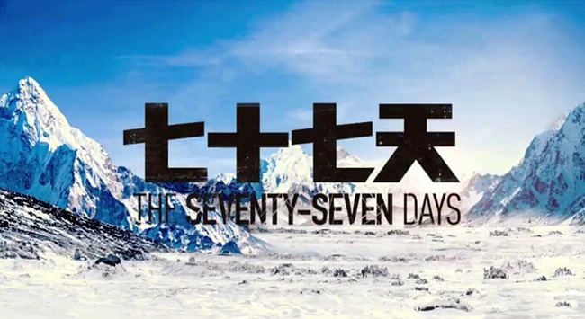
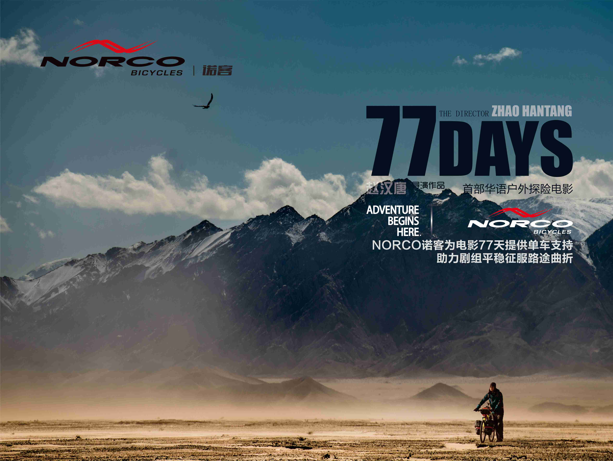
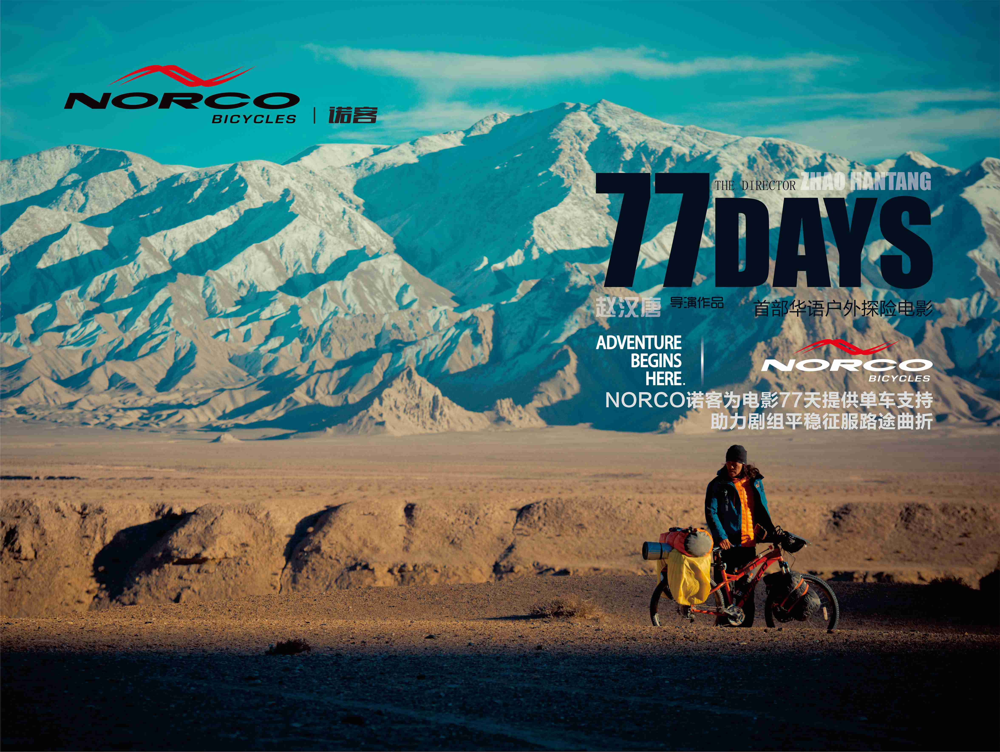
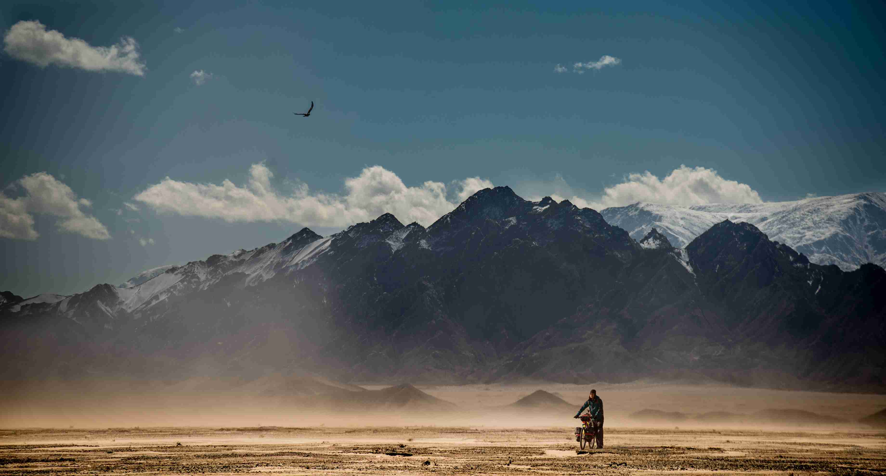

77天——中国首部户外探险电影
《七十七天》故事原型
生活不止眼前的苟且，还有诗和远方
我们的星球除了冰雪覆盖的南极和北极，地球上还有人类无法生存的第三极——羌塘。羌塘在藏语里的含义是北方未知的空地，他位于世界屋脊中心西藏、新疆、青海交界，平均海拔5000米以上，大家熟知的可可西里仅是羌塘的一小部分。高晓松说，生活不止眼前的苟且，还有诗和远方。远离城市的庸忙和戾气，才能看见那些被冰川覆盖的大地，羚羊放肆奔跑的旷野，落日余晖下山脚天真玩耍的孩童，和他们清澈见底的双眼。世界比你的想象更像一首赞美诗——在远方。
无论是地理距离还是心灵感受，这里是当之无愧的，远方。
一次旅行解决不了生活的问题，结束旅行之后 ，却能改变你的内心；你的内心改变了，有的问题就不再是问题 ，也许这就是旅行的意义……
探险作家杨柳松77天孤身穿越羌塘无人区
上海青年杨柳松以自行车为运载工具，携带非常有限的给养独自一人徒步77天横穿羌塘无人区，经历了难以想象的生死考验。国际顶尖的探险家至多选择30天的极限纵穿，而杨柳松此次的穿越前无古人，凶险程度远胜攀登珠峰。
我们能为心灵和远方做些什么
我们想把最美好的羌塘展示给世人。一望无际的旷野、奔跑的藏羚羊、穿越旷古的冰川和千万年不变的日光需要更多人的保护；破旧的学校、匮乏的师资与孩子们希翼的目光需要更多人伸出援手。我们想把所有这些无暇的事物和您的支持与爱浓缩成一部电影，把这个77天孤身穿越羌塘无人区的故事拍成中国首部户外探险IMAX电影，一部中国荒原风光版的《少年PI》，在全世界传递。
影片女主人公原型：蓝天
蓝天毕业于中央美院，职业摄影师，在西藏墨脱徒步旅行时为拍摄星空摔伤，高位截瘫，面对厄运她曾经想过放弃生命，在朋友鼓励下重新振作，在拉萨开了一间客栈。当杨柳松深陷绝境时，是轮椅上蓝天的笑容激励着他一步步走出无人区。
项目亮点
— 首部华语户外探险剧情片，题材独特的电影
- 1、第四届北京国际电影节创投特别大奖
- 2、入围六十七届戛纳国际电影节新影人论坛
- 3、入围第十届华沙电影节中东欧电影市场
- 4、备受各大主流国际电影节选片人关注
— 户外探险 全新题材《IMAX》
— 改编自真人真事《77天孤身穿越羌塘无人区》原帖点击量超过2000万
— 此次穿越前无古人、凶险程度远胜攀登珠峰，使中国探险运动跻身世界顶尖行列
— 根据原帖出版的户外纪实《北方的空地》获得第六届户外金犀牛最佳出版物
最新资讯
-
爆料！NORCO进军影视界？！有图有真相
阅读全文
《破风》电影之后又一单车秘闻，NORCO诺客单车赞助都市情感暖心大戏《爱的速递》。该剧由著名导演刘雪松执导，实力派花旦姚笛、魅力型男杜淳、功夫小子释小龙主演，目前正在北京拍摄。
-
对于即将出现在大银幕上的NORCO，你期待么？
阅读全文上次向大家透露了NORCO诺客即将出现在电视剧《爱的速递》中的喜讯，引发了业内的广泛关注与讨论。但你以为NORCO诺客进军影视界之路只凭一部电视剧？绝对Too young too simple！
-
中国首部户外探险院线电影《七十七天》梦想出品人众筹 一场户外旅行行业的嘉年华
阅读全文
2015年10月11日14:30-15:30，南京国际博览中心5A舞台区，该电影导演及主演赵毅将会来到亚洲自行车展现场，与大家共同欣赏《七十七天》最新预告片，敬请期待！
-
诺客倾情加盟电影《七十七天》展示会，骑行无处不在
阅读全文
中国首部户外探险电影《七十七天》于10月11日登陆2015亚洲自行车展主舞台进行宣传展示，并独家播放了最新花絮。此举吸引了大批车友和媒体的关注，展示现场人气爆棚。
精彩图片
- 
-

- 
-

-

-

-

-

-

- 